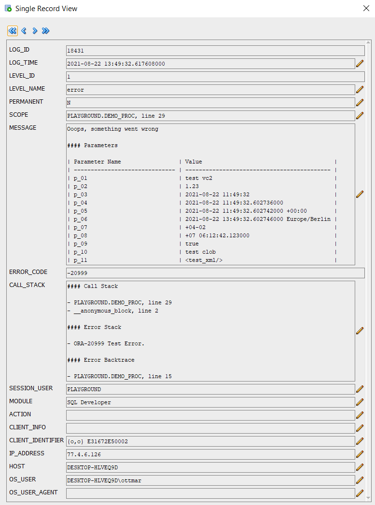

Yet another Oracle DB logging tool: Console
Easy to install, works without context and special rights on administrative views, brings APEX integration with it
Table of Contents
Introduction
It looks like it is a hobby of PL/SQL developers to develop their own logging tool. There are already some free tools on the market and probably many that have never been released (DOAG talk by Sabine Heimsath on the topic):
One reason seems to be that everyone has different ideas or needs. For me, I wanted a logging tool that is very easy to install and works even if you are not allowed to create a context in the database and also have no special read permissions for administrative views like v$session. You only need the rights to create tables and packages and optionally a cleanup job - pretty standard. Nevertheless, it is possible to move individual users/sessions to a higher log level for debugging purposes. As this is solved via client identifier, this will also work in an environment without fixed session ID like e.g. APEX. If no client identifier is set in an environment, then Console simply assigns one itself. Console reads its configuration from a table with only one line supported by the result cache. This ensures a resource-saving execution. Also the check whether a log message is really written to the log table based on the current log level is highly optimized to keep the overhead as low as possible in production environments.
A single install script
For Console, all scripts are merged into a single install script. Since SQLcl can also load scripts from the Internet, you could install the tool in a minute without downloading it first: Invoke SQLcl, log into the desired schema, and call @https://raw.githubusercontent.com/ogobrecht/console/main/install/create_console_objects.sql. A few seconds later you can start logging. If you want to install it in APEX and only have browser access to your development environment, the single install script in SQL Workshop is also very helpful and Console installs quickly.
Production safe without further configuration
Console logs only errors (level 1) by default. This means that you are on the safe side on production systems without any further configuration. But if you want to enable other levels like warning (2), info (3), debug (4) or trace (5) on a development system and don’t want to do this for each session individually, you can set it globally: exec console.conf(p_level => 3);. More about this in the package description for the procedure console.conf.
To set a session (client identifier) to a higher log level use the procedure console.init. If you omit the parameter p_client_identifier, then the client identifier of your own session is automatically taken - here is an example:
-- Dive into your own session with the default log level of 3 (info) and the
-- default duration of 60 (minutes).
exec console.init;
-- With level 4 (debug) for the next 15 minutes.
exec console.init(4, 15);
-- Using a constant for the level
exec console.init(console.c_level_debug, 90);
-- Debug an APEX session...
begin
console.init(
p_client_identifier => 'OGOBRECHT:8805903776765',
p_level => console.c_level_debug,
p_duration => 15
-- there are more parameters availabe...
);
end;
/
Now the question arises, how to get the client identifier of a foreign session without read access to adminstrative views like e.g. v$session. A variant would be to write this for example in the frontend of an application with sys_context('USERENV', 'CLIENT_IDENTIFIER') - e.g. in the footer or on a help page.
If you want to return to the normal mode of global settings for all sessions, you can do so with console.exit.
You should not use the procedures console.conf, init and exit in your business logic - they are only used for managing session settings and for debugging purposes and should therefore only be used interactively or in SQL scripts.
Method names based on JavaScript Console
Console uses as many method names from the JavaScript Console as possible - so switching between backend code and frontend code shouldn’t be that hard as far as method names are concerned. Whether the methods really write anything to the log table CONSOLE_LOGS depends on the active log level - so first these:
- Level 1: Error
- Level 2: Warning
- Level 3: Info
- Level 4: Debug (instead of verbose in the JavaScript Console)
- Level 5: Trace (not available in the JavaScript Console)
The main instrumentation methods:
- console.error_save_stack (more on that in a moment):
- console.error (level error)
- console.warn (level warning)
- console.info & log (level info)
- console.debug (level debug)
- console.trace (level trace)
- console.count & count_reset
- console.count_current & count_end (level info)
- console.count_current & count_end (function overloads, independent of log level)
- console.time & time_reset
- console.time_current & time_end (level info)
- console.time_current & time_end (function overloads, independent of log level)
- console.table# (level info)
- console.assert & assertf
- console.format
- console.add_param
More in the API overview.
Reduced amount of log entries through saved call stack
Console uses the capabilities of the utl_call_stack package to reduce the number of log entries to a possible minimum. Who doesn’t know the problem: In case of an error, a log entry is created in each sub-function to record as many details as possible. In the end you have to watch how the log table gets cluttered and you try to find out from the many log entries where exactly the error occurred.
It would be helpful to see the method names in the error backtrace - but the database only writes the package names and the line number in the backtrace. To work around this problem Console offers the possibility instead of writing an error in the submethods into the log table, to save the call stack with the call console.error_save_stack until finally in the outermost main method console.error is called, which then enters the error including saved call stack into the log table. For clarification, here is a script with a test package:
set define off
set feedback off
set serveroutput on
set linesize 120
set pagesize 40
column call_stack heading "Call Stack" format a120
whenever sqlerror exit sql.sqlcode rollback
prompt TEST ERROR_SAVE_STACK
prompt - compile package spec
create or replace package some_api is
procedure do_stuff;
end;
/
prompt - compile package body
create or replace package body some_api is
------------------------------------------------------------------------------
procedure do_stuff is
--------------------------------------
procedure sub1 is
--------------------------------------
procedure sub2 is
--------------------------------------
procedure sub3 is
begin
console.assert(1 = 2, 'Demo');
exception --sub3
when others then
console.error_save_stack;
raise;
end;
--------------------------------------
begin
sub3;
exception --sub2
when others then
console.error_save_stack;
raise;
end;
--------------------------------------
begin
sub2;
exception --sub1
when others then
console.error_save_stack;
raise no_data_found;
end;
--------------------------------------
begin
sub1;
exception --do_stuff
when others then
console.error;
raise;
end;
------------------------------------------------------------------------------
end;
/
prompt - call the package
begin
some_api.do_stuff;
exception
when others then
null; --> I know, I know, never do that without a final raise...
--> But we want only test our logging without killing the script run...
end;
/
prompt - FINISHED, selecting now the call stack from the last log entry...
select call_stack from console_logs order by log_id desc fetch first row only;
Here is the output of the above script - the Saved Error Stack section is Console’s special feature, the other three stack and trace sections are the database’s standards:
TEST ERROR_SAVE_STACK
- compile package spec
- compile package body
- call the package
- FINISHED, selecting now the call stack from the last log entry...
Call Stack
------------------------------------------------------------------------------------------------------------------------
#### Saved Error Stack
- PLAYGROUND.SOME_API.DO_STUFF.SUB1.SUB2.SUB3, line 14 (line 11, ORA-20777 Assertion failed: Demo)
- PLAYGROUND.SOME_API.DO_STUFF.SUB1.SUB2, line 22 (line 19)
- PLAYGROUND.SOME_API.DO_STUFF.SUB1, line 30 (line 27)
- PLAYGROUND.SOME_API.DO_STUFF, line 38 (line 35, ORA-01403 no data found)
#### Call Stack
- PLAYGROUND.SOME_API.DO_STUFF, line 38
- __anonymous_block, line 2
#### Error Stack
- ORA-01403 no data found
- ORA-06512 at "PLAYGROUND.SOME_API", line 31
- ORA-20777 Assertion failed: Test assertion with line break.
- ORA-06512 at "PLAYGROUND.SOME_API", line 23
- ORA-06512 at "PLAYGROUND.SOME_API", line 15
- ORA-06512 at "PLAYGROUND.CONSOLE", line 750
- ORA-06512 at "PLAYGROUND.SOME_API", line 11
- ORA-06512 at "PLAYGROUND.SOME_API", line 19
- ORA-06512 at "PLAYGROUND.SOME_API", line 27
#### Error Backtrace
- PLAYGROUND.SOME_API, line 31
- PLAYGROUND.SOME_API, line 23
- PLAYGROUND.SOME_API, line 15
- PLAYGROUND.CONSOLE, line 750
- PLAYGROUND.SOME_API, line 11
- PLAYGROUND.SOME_API, line 19
- PLAYGROUND.SOME_API, line 27
- PLAYGROUND.SOME_API, line 35
If you don’t use console.error_save_stack but always console.error, then you get at least the last three sections in the log - and without extra work in the code. You just have to remember console.error.
Simple logging of method parameters
Console also provides a simple way to log method parameters. Here is a sample procedure with parameters of all supported types:
--create demo procedure
create or replace procedure demo_proc (
p_01 varchar2 ,
p_02 number ,
p_03 date ,
p_04 timestamp ,
p_05 timestamp with time zone ,
p_06 timestamp with local time zone ,
p_07 interval year to month ,
p_08 interval day to second ,
p_09 boolean ,
p_10 clob ,
p_11 xmltype )
is
begin
raise_application_error(-20999, 'Test Error.');
exception
when others then
console.add_param('p_01', p_01);
console.add_param('p_02', p_02);
console.add_param('p_03', p_03);
console.add_param('p_04', p_04);
console.add_param('p_05', p_05);
console.add_param('p_06', p_06);
console.add_param('p_07', p_07);
console.add_param('p_08', p_08);
console.add_param('p_09', p_09);
console.add_param('p_10', p_10);
console.add_param('p_11', p_11);
console.error('Ooops, something went wrong');
raise;
end demo_proc;
/
In the exception handling you can see nicely that you always call the same procedure console.add_param and pass the name and the value. The parameters are cached in an array in the console package (shortened to a maximum of 2000 characters) and taken over with the next call of a log method (error, warn, info, log, debug or trace). If you don’t want the parameters to be truncated, you are free to write the parameter directly into the log message - this is of type clob and is therefore not subject to any size restrictions.
Here an example call of the above procedure:
begin
demo_proc (
p_01 => 'test vc2' ,
p_02 => 1.23 ,
p_03 => sysdate ,
p_04 => systimestamp ,
p_05 => systimestamp ,
p_06 => localtimestamp ,
p_07 => interval '4-2' year to month ,
p_08 => interval '7 6:12:42.123' day to second ,
p_09 => true ,
p_10 => to_clob('test clob') ,
p_11 => xmltype('<test_xml/>') );
end;
/
This call then writes the following log message - see the MESSAGE column:

Markdown format for automatically determined metadata
The attentive reader might not have missed that the above log message is formatted in Markdown. So, if you like, you can have your report rendered accordingly in HTML (e.g. in APEX) - however, it is well readable in text form, too. The Markdown table format as in the example above is also used by Console for logging other metadata such as APEX environment, CGI environment, user environment and console environment. All of these environments can be turned on for each individual log call. They are then appended to the log message like the parameters. Here exemplarily the signature of the error procedure:
procedure error (
p_message in clob default null , -- The log message itself
p_permanent in boolean default false , -- Should the log entry be permanent (not deleted by purge methods)
p_call_stack in boolean default true , -- Include call stack
p_apex_env in boolean default false , -- Include APEX environment
p_cgi_env in boolean default false , -- Include CGI environment
p_console_env in boolean default false , -- Include Console environment
p_user_env in boolean default false , -- Include user environment
p_user_agent in varchar2 default null , -- User agent of browser or other client technology
p_user_scope in varchar2 default null , -- Override PL/SQL scope
p_user_error_code in integer default null , -- Override PL/SQL error code
p_user_call_stack in varchar2 default null -- Override PL/SQL call stack
);
Extensible logs through overloaded log methods
The error procedure has an overload in the form of a function that returns the log ID. Thus one can extend the logging also with own data in own tables e.g. for a downstream release process in case of specific errors. This is also the purpose of the p_permanent parameter, which ensures that the cleanup job or the console.purge and console.purge_all procedures do not delete the correspondingly marked log entries and that these are permanently available. All other log methods (warn, info, log, debug, trace) are implemented in the same way and with the same parameters - but some have different default values. For the error method the call stack is written, for the trace method all four environment details.
The parameters p_user_agent, p_user_scope, p_user_error_code and p_user_call_stack are intended to be able to capture external log events as well and to overwrite the automatically determined values of the PL/SQL environment. As an example an external load process in a data warehouse or error messages from the JavaScript frontend of an application can be mentioned. With a little imagination, everyone will come up with their own use cases here…
Measure time and count things
Measuring execution times and counting things are very common functions. Console can help here to not have to create too many helper variables and keep the code short and sweet. For this purpose it offers the procedures time, count and other helpers. You can easily run several timers or counters in parallel - they are each identified by an optional label. If you omit the label, then internally the label is default. The best way to illustrate this is a bit of sample code:
begin
--basic usage
console.time;
sys.dbms_session.sleep(0.1);
console.time_end; -- without optional label and message
console.time('myTimer');
sys.dbms_session.sleep(0.1);
console.time_current('myTimer'); -- without optional message
sys.dbms_session.sleep(0.1);
console.time_current('myTimer', 'end of step two');
sys.dbms_session.sleep(0.1);
console.time_end('myTimer', 'end of step three');
end;
/
This will result in the following log messages in the console_logs table if the current log level is 3 (info) or higher:
- default: 00:00:00.102508
- myTimer: 00:00:00.108048
- myTimer: 00:00:00.212045 - end of step two
- myTimer: 00:00:00.316084 - end of step three
But sometimes you don`t want to have prefabricated log entries or you need the elapsed time to write them in scripts to the server output. For this purpose the procedures time_current and time_end used in the code are also available as overloaded functions. With these you can do what you want:
set serveroutput on
begin
console.time;
--console.print is an alias for sys.dbms_output.put_line
console.print('Processing step one...');
sys.dbms_session.sleep(0.1);
console.print('Elapsed: ' || console.time_current);
console.print('Processing step two...');
sys.dbms_session.sleep(0.1);
console.print('Elapsed: ' || console.time_current);
console.print('Processing step three...');
sys.dbms_session.sleep(0.1);
console.print('Elapsed: ' || console.time_end);
end;
/
This then leads to something like this server output:
Processing step one...
Elapsed: 00:00:00.105398
Processing step two...
Elapsed: 00:00:00.209267
Processing step three...
Elapsed: 00:00:00.313301
For counting things or processes there are the same procedures and functions as for time measurements - only with the prefix count instead of time (we use the variant without label in the example):
set serveroutput on
begin
console.print('Counting nonsense...');
for i in 1 .. 1000 loop
if mod(i, 3) = 0 then
console.count;
end if;
end loop;
console.print('Current value: ' || console.count_current );
console.count_reset;
for i in 1 .. 10 loop
console.count;
end loop;
console.print('Final value: ' || console.count_end );
end;
/
This then results in a server output as follows:
Counting nonsense...
Current value: 333
Final value: 10
The count_reset procedure used in the example also exists for timers and is called time_reset there. The respective *_end methods delete the entry from the list of timers/counters managed in the console package.
Assert, format and other helpers
There are other auxiliary methods that make the developer’s life more pleasant. First of all, the assert procedure should be mentioned. Everyone should know this recurring pattern:
if not x < y then
raise_application_error(-20999, 'X should be less than Y');
else
-- your code here
end if;
It gets especially ugly when you have to check multiple conditions. The whole thing can also be formulated as a one-liner:
console.assert(x < y, 'x should be less then y');
If you want to enrich texts with dynamic information, then you are quickly in concatenation hell:
console.assert(
x < y,
'x should be less then y (x='
|| to_char(x)
|| ', y='
|| to_char(y)
|| ')'
);
Here the format function can help you:
console.assert(
x < y,
console.format(
'x should be less then y (x=%s, y=%s)',
to_char(x),
to_char(y)
)
);
format accepts up to 10 parameters and works according to the following rules:
- replace all occurrences of
%0…%9with the corresponding parametersp0…p9 - replace
%nwith new lines (line feed character) - replace all occurrences of
%sin positional order with the corresponding parameters with sys.utl_lms.format_message - see also the Oracle docs
I personally am very reluctant to type sys.dbms_output.put_line. Console does write to a log table with all the log methods, but actually the word console suggests that we can also write directly to the server output, right? For that we have the procedure print:
console.print('A message');
Then there are the short forms of console.print(console.format(...)) and console.assert([boolean expression], console.format(...)):
console.printf(
'A dynamic message with a %n second line of text: %s',
my_var
);
console.assertf(
x < y,
'x should be less then y (x=%s, y=%s)',
to_char(x),
to_char(y)
);
Also often needed is a fast, cached clob concatenation - that’s where Console can help with clob_append & clob_flush_cache.
More can be found in the API overview.
Displaying the package status of Console in a session
If you are interested in what is configured in the current session of Console, you can look at it with a pipelined table function or make it available in your application with a report:
select * from table(console.status);
| ATTRIBUTE | VALUE |
|---|---|
| c_version | 1.0.0 |
| localtimestamp | 2021-10-03 13:58:00 |
| sysdate | 2021-10-03 11:58:00 |
| g_conf_check_sysdate | 2021-10-03 11:58:10 |
| g_conf_exit_sysdate | 2021-10-03 12:58:00 |
| g_conf_client_identifier | {o,o} 11ECD3500002 |
| g_conf_level | 5 |
| level_name(g_conf_level) | trace |
| g_conf_check_interval | 10 |
| g_conf_enable_ascii_art | true |
| g_conf_call_stack | false |
| g_conf_user_env | false |
| g_conf_apex_env | false |
| g_conf_cgi_env | false |
| g_conf_console_env | false |
| g_counters.count | 1 |
| g_timers.count | 2 |
| g_saved_stack.count | 0 |
| g_prev_error_msg |
APEX Error Handling Function
For APEX, Console comes with a so-called “Error Handling Function” which can enter errors within the APEX runtime environment into the log table. If you want to use this, you have to enter this function in your application in the “Application Builder” under “Edit Application Properties > Error Handling > Error Handling Function”: console.apex_error_handling.

The Error Handling Function logs the technical error in the CONSOLE_LOGS table and writes a friendly message to the end user. It uses the APEX Text Message feature for the user-friendly messages in case of constraint violations, as described in this video by Anton and Neelesh from Insum, which in turn is based on an idea by Roel Hartman in this blog post. The APEX community rocks….
APEX Plug-In for capturing frontend errors
Furthermore, there is an APEX Dynamic Action Plug-In, which enters JavaScript errors in the user’s browser via AJAX call into the log table. This way you also get to know if the frontend is not running smoothly for the users…
You have to make sure that Console is either installed in the parsing schema of the application or a synonym named CONSOLE has been created in the parsing schema which points to the package CONSOLE. Then you can install the plug-in in install/apex_plugin.sql and create a Dynamic Action for the whole application on page zero:
- Event: Page Load
- Action: Oracle Instrumentation Console [Plug-In]
- No further customization required (only a JavaScript file will be loaded)
For those interested in what the plug-in does: sources/apex_plugin_console.js. This is currently a minimal implementation and may be improved in the future.
Sources of inspiration
I am not alone in the world and without the others not much goes in software development. Here are a few links to sites or projects that inspired me on the way to my own logging tool:
- JavaScript Console API
- Logger
- Instrumentation for PLSQL
- PIT
- Oracle Magazine - Sophisticated Call Stack Analysis
Special thanks to Dietmar Aust, who gave me time and ideas with a discussion session at an early stage.
Project homepage
Console is hosted on GitHub.
Happy logging and debugging :-)
Ottmar